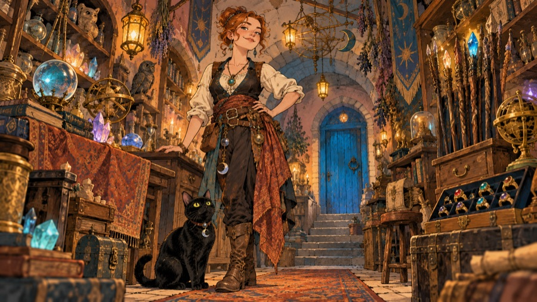

Magic, devices and artifacts

Draft. How the game's magic and items fit the world: the two realms and their eight books, why unknown things look different to every delver, who made the wands, staffs and rods, where the special kinds come from, and the six artifacts. The cosmology behind the two realms is in Cosmology.
The two realms
| Arcane | Holy | |
|---|---|---|
| Source | Starlight: the far sparks of the First Fire | The carried flame: the ember passed hand to hand |
| Taught by | The Collegium of Sparks | The Order of the Lamp |
| Callings | Arcanist (all of it); Delver and Wayfinder (some, later) | Lampwarden (all of it); Oathknight (some, more slowly) |
| How it is learned | Studied: an Arcanist chooses each new spell | Granted: a prayer is given, not chosen, when the flame thinks you are ready |
| Nature | Cold, exact, indifferent to its use | Warm, protective, hostile to the dark |
| Best against | Anything, from range | The undead and the evil, close by |
Both need the book in the pack. Arcanists say the book holds the pattern; Keepers say the book holds the promise. Either way, no book, no spell.
Why the first casting teaches you something. A spell is a borrowed light, and the first time you borrow one you learn its weight. In the game: the first cast of each spell gives experience.
Why spells fail. Starlight slips from a tired or clumsy mind; the flame does not come to a distracted prayer. A stunned caster fails far more often, because a ringing head can hold neither.
The arcane books
| Book | Written | Notes |
|---|---|---|
| Book of First Sparks | ~1700 BH, by the Collegium's founders | Spark, sensing and stepping. Every Arcanist's first book, unchanged in two thousand years except for the jokes in the margins. |
| Book of Hidden Ways | ~1400 BH | Frost, slumber, knowing, and Melt Stone, which the Stonekin consider a war crime. |
| Book of Storm and Frost | ~1100 BH, by the Collegium's battle-mages | Written for war with the hill clans during the Long Dusk, which is why it is mostly about killing things at a distance. |
| Book of Deep Sorcery | ~420 BH, author unknown | Unravel, Mana Storm, Shake the Earth. The Collegium denies writing it. Some say Duke Ashvane left a copy at court. |
The holy books
| Book | Written | Notes |
|---|---|---|
| Lamp Psalter | ~2550 BH, the first Keepers | Mend, bless, light the way, feed the hungry, tend the flame. The prayers of people building something in the dark. |
| Hymns of the Hearth | ~1900 BH | Prayers for the lamplighters of the rings: wards against heat and cold, finding the way, lifting curses. |
| Litany of Dawn | ~640 BH, after the Night the River Rose | Prayers against the dead: Turn the Dead, Searing Dawn. Written in grief, which may be why they work so well. |
| Rites of the Unbroken Flame | Caedra's own, the Order says | Holy Word, Banish Evil, Unbroken Flame. Said to be the rites she spoke while lighting the Ring of Glass. |
Why unknown things look different to every delver
A potion of Speed is Violet to one delver and Rusty to the next; a scroll's title is a nonsense word that changes from delver to delver; wands are oak or ebony, rings jade or onyx, at random. The Keepers' explanation: the Deep muddles what the eyes see. Morrowgloom's dark sits between a thing and the one looking at it, and shows each delver their own colours, until they know the thing. Once you know what a potion is, you see it truly.
Practical folk add that nobody in four thousand years of potion-making agreed on colours anyway, and that Thorne Vialkeeper labels everything in his own cipher. Both explanations are true in Lanternhollow. In the game: flavours are shuffled for every new character; drinking, reading, Identify or selling teaches you the kind.
Scroll titles are written in spark-script, the Collegium's cipher alphabet, which nobody but the writer can read until the scroll has been used once.
Sensing. An experienced delver can feel whether a blade is blessed or cursed before knowing what it is, the way you feel a draught before you see the open door. In the game: {magical}, {cursed} and the like, sensed on pickup and over time.
Devices
- Wands are cut from woods that grew under starlight (the Greenroof's oak, ash, yew and rowan; ebony from the coast) and charged by the Collegium. Each charge is a borrowed spark; recharging borrows more, and a wand that borrows too much bursts.
- Staffs descend from the lamplighters' staffs of the Lampway: long poles that lit, warded and showed the way. The Keepers' staffs heal and light; the darker ones (Summoning, Darkness) were made by people imitating Keepers.
- Rods are Tinkerling work: metal (brass, copper, silver) wound around a sliver of glow crystal, which refills the rod slowly with stored light. That is why rods recharge on their own.
- Rings and amulets are set with stones from the veins of the Lampway (jade, onyx, opal, garnet). Stones that sat beside a lit shrine for long enough soaked up a blessing. Stones that sat beside the dead soaked up something else: that is where cursed rings come from.
- Lights. Torches are pitch and rag. Lanterns are the Lantern Guild's, with oil from the Tarrow towns. A glow crystal, the rarest light, is Lampway lamplight set into stone, cut from a shrine wall, and never goes out. Every glow crystal in the world is a little light taken out of the cage, which the Keepers never let anyone forget.
- Digging tools. Shovels and picks from the Glow Rush lie all over the upper workings; Stonekin mattocks are rarer and much better.
The special kinds
Weapons and armour "of" something carry the mark of the people who made them, or of what was done to them.
| Kind | Where it comes from |
|---|---|
| of Burning, of Frost, of Storms | Tempered at the Anvil of the Pact in the Ring of Forges (burning), in frost-giant ice (frost), or struck by Collegium lightning (storms). |
| of Slay Beast, of Slay Undead, of Slay Evil | Blessed by the Order for the Oathknights' hunts: beasts in the Ring of Roots, the dead in the Ring of Rest, fiends below. |
| (Blessed) | Laid on the Eternal Lamp's altar for a night. |
| of Warding | A Keeper's ward carved into a blade, for lamplighters who had to go through the rings unescorted. |
| of Sharpness | Stonekin edge-work: honed on stone that held light. |
| of Resist Fire, Cold, Acid, Lightning; of Resistance | Ashborn ash-cloth, Tinkerling oilskins and Stonekin plate made for the hazards of each ring. |
| of Stealth | The Quiet Hand's work, though no one will admit it. |
| of Speed, of Free Action | Burrowfolk runners' gear from the Age of Lamps, made so messages between the rings could not be held up. |
| of Seeing | Keeper helms for watching the dark, which can see what hides in it. |
| of Intellect, of Wisdom, of Might, of Power, of Accuracy | Gifts of old Aurenhold to its champions and scholars. |
The six artifacts
Embersong (longsword, around 1,000 ft)
"Its blade glows like a coal and hums softly." Forged by Ashborn smiths at the Anvil of the Pact for the Order of the Lamp, in the Age of Lamps. Dame Orsolya Vell carried it into the Ring of Rest after the Fall to relight the tomb of Aldren the Kindler; the blade came back up without her, carried by the river. It burns what it cuts, its bearer does not burn, and it gives a little light of its own. The hum, the Ashborn say, is the forge-song of the Pact, still being sung.
The Mantle of Quiet Steps (cloak, around 900 ft)
"Grey cloth that seems to swallow sound." The cloak of "Nobody" Quill, the only delver ever to rob the Brassle & Vane vault before it fell. Woven, the Quiet Hand says, from the dust of the shadows it was made among. The Hand claims it as its founding relic, and also denies it.
The Stonehelm of the Deep Halls (great helm, around 1,250 ft)
"Carved from one block of dark stone, and yet light as a cap." Thane Gorran Deephall's helm, carved from the first stone of the Ring of Stone to hold light. It gives the strength and endurance of the Deephall clans and the sight in the dark of their halls. The Deephall clans want it back, and will be very polite until they get it.
The Lantern of the First Keeper (lantern, around 1,500 ft)
"Its flame never needs oil." Caedra's lantern, lit from the carried ember, that she took down to light the Ring of Glass in about 2100 BH. It was found two thousand years later in the Ring of Forges, still burning. Song says it is the first lamp of all; the Order's records say she had three before it. Either way, its flame cannot be put out, and the Eternal Lamp in the temple was lit from it.
Starfall (long bow, around 1,750 ft)
"A bow of pale wood strung with silver." Made by Ithrel Silverstring around 1150 BH, from Greenroof wood that grew under the brightest stars, strung with silver drawn from starlight caught in a Sylvan bowl. It shoots truest in the dark. The Sylvan still send archers to Lanternhollow by Ithrel's promise.
The Band of Swift Feet (ring of speed, around 2,250 ft)
"A plain silver ring that makes the world seem slow." Worn by Wren Hallow, the Burrowfolk runner who carried word of a failing ring from the Ring of Glass to the surface in one night, around 1200 BH. It makes its wearer fast and impossible to hold still. Wren said it made the world seem lonely, and gave it back.
(Depths are those the game makes each artifact at, in feet.)
Ideas for the game
Places this lore could go, if wanted:
- Item cards could show the "where it comes from" line for special kinds and artifacts.
- The Journal could gain a Lore tab that fills in as you meet things: a page per unique, per ring, per book.
- Level feelings could name the ring ("The stones here were cut by Stonekin hands.").
- Shopkeepers' greetings could mention the Guttering and the call of 1206 YH.
- Relighting a shrine (a lit room) could become a Lampwarden ability or quest.